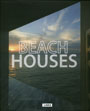

PRESS
- Sunset Magazine, April 2013
View Article (pdf)
 Seattle Magazine, November 2012
Seattle Magazine, November 2012
View Article
- Wall Street Journal, March 21, 2013
Featured Project: Madison Park ResidenceView Article
- Seattle Daily Journal of Commerce
Featured Project: ShanikView Article
- New York Times, April 10, 2013
Featured Project: Shanik
View Article
- Seattle Times, March 29, 2013
Featured Project: Shanik
View Article
- Seattle Times, February 22, 2013
Featured Project: The Whale Wins
View Article
- Seattle Times, January 11, 2013
Featured Project: Joule
View Article
- Seattle Times, Pacific NW Magazine, June 1, 2012
Featured Project: North Beach
View Article
- Interior Design, Best of Year Book
Featured Project: North Beach
View Book
-
BOYA awards feature in Interior Design Magazine, 2011
View Article
-
Firm feature in Western Art and Architecture magazine, Feb/Mar 2012
View Article
-
Interior Design Magazine, March 2011
Feature article on the North Beach Residence.
View Article
-
Wall Street Journal, March 4, 2011
Friday Journal section "Home Front" article featuring the North Beach Residence.
View Article
-
C3 Magazine (Korea) issue #318 (January/February 2011)
Feature article on the Suncrest Residence.
View Article
-
150 Best Eco House Ideas, Marta Serrats. Harper Collins, 2010
Feature article on the North Beach Residence.
- 
Beach Houses, Carles Broto. Links Books, 2010
Feature article on the North Beach Residence.
-
"SMALLMEDIUMLARGE" University of Washington Department of Architecture, October 2010
Heliotrope presents the North Beach Residence at a lecture examining the impact graduates of the department have on the built environment of the region.
View Poster
-
Luxe Magazine, Summer 2010
Feature article "Deeply Rooted" featuring the Suncrest Residence.
View Article
-
Dwell Magazine, July/August 2010
"Houses We Love" section featured the North Beach Residence.
View Article
- Western Interiors, June/July 2008
"Missoula Modern" photo essay and article featuring the Grant Creek Residence.
View Article
-
New Edge/New Blood: Exhibition at the Seattle AIA, August/September 2008
Juried exhibit of 12 selected firms "shaping the future of Seattle architecture".
-
Seattle Magazine, January 2008
"Top 50 Northwest Architects" roster features Heliotrope Architects.
- Big Sky Journal, "Home" 2007
"Modern Warmth" photo essay and article featuring the Grant Creek Residence.
View Article
-
Northwest Home + Garden, May/June 2007
"Think Green" issue featured an article titled "Water Wise" on the North Beach Residence.
- "What Makes it Green?" Symposium and exhibition, Spring 2007
Juried exhibition featured the Ross Park Shelterhouse and its sustainable features.
- ARCADE Journal, Fall 2006
Cover story: "New Talent: Where is the Next Generation of Public Architects?"
Article featuring Heliotrope among 7 firms worthy of being awarded significant public commissions.
View Article
- Northwest Home + Garden, November 2006
"Top 50 Architects" cover article featured the Heliotrope practice.
 DJC "Project of the Week", July 31, 2006
DJC "Project of the Week", July 31, 2006
Featured project: Ross Park Shelterhouse.- Wood Design & Building, Summer 2006
Feature article on Grant Creek.
View Article
- Custom Home: Kitchen & Bath Design Guide, April 2006
Feature article "East Out West" on the Grant Creek kitchen.
- 25 Houses Under 3,000 Square Feet, by James Trulove" width="90" height="91" />25 Houses Under 3,000 Square Feet, by James Trulove (Collins Design 2005)
Residential design book featuring Blue Ridge and View Avenue.
- Seattle Times/Pacific Northwest Magazine: Fall Home Design, October 10, 2004
Cover Story "Simply Beautiful" featuring Blue Ridge.
View Article
- Custom Home, May/June 2003
"Dream Catcher" article featuring the Horseback Ridge bedroom design.
- Both/And: Building Modern in the Context of Historic Architecture, 2003
Juried exhibition featuring WRA Advertising.
- Seattle Times / AIA "Home of the Month" Program, Spring 2002
Featured Project: View Avenue Residence.
 Spokesman Review: "In Life" section cover, January 26, 2001
Spokesman Review: "In Life" section cover, January 26, 2001
"Standout Structure", an in-depth cover-article on WRA Advertising.